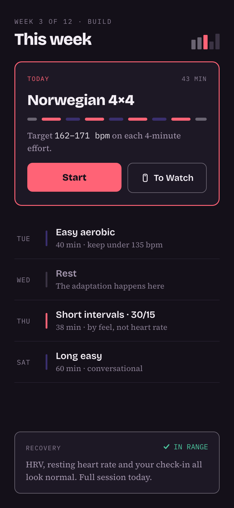

Norwegian for “endure” · #VO2MAXXING
You shouldn’t have to pick the workout.
Uthold takes a baseline, a goal, and the hours you actually have — then decides what you train this week. It spaces the hard days, rotates the stimulus, and backs off when your recovery says to.
Most VO₂ max apps hand you a menu.
Picking the right session every week is the hard part, and it is the part that decides whether the number moves. So that is the part we do.
A timer with presets
Eight protocols in a list. You choose one, you start a countdown, and you work out which to run next week, how hard is hard enough, and what to do when you’re wrecked on Thursday. The app never has an opinion.
A week, already decided
One goal, one time budget, one baseline. Uthold schedules the sessions, keeps hard days apart, varies the stimulus so you keep adapting, and reduces the load when your recovery signals say to. You open it and train.
If your number has been higher than it is now.
Train for a race, watch it climb, finish — and watch most of it go back within a couple of months. That spike and collapse is the most common VO₂ max story there is, and almost nothing on the market is built for the part that comes after.
You are not starting over
A real training history leaves a floor underneath you that a beginner doesn’t have. Coming back is a different problem from starting, and it deserves a different plan.
Cut the volume, not the intensity
This is the best-supported finding in our review. Cutting training volume by two thirds held VO₂ max for months. Cutting the intensity by a third did not. So the hard sessions stay hard, and everything around them can get smaller.
Holding it is the goal, and it counts as one. Between races, staying where you are is a real result — and the only one nobody thinks to celebrate. Uthold is being built to treat a flat line after a race as a win rather than a failure.
Being straight about the evidence: that volume-versus-intensity work was done in previously-untrained young adults who never stopped training altogether. It is a sound principle to plan around, not a promise about your number, and how quickly fitness fades after fifty has not really been studied.
Choosing maintenance as a goal is not in the app yet. It is on the list, and we would rather say so than show you a screen that doesn’t exist.Three steps, then it runs itself.
The engine is explicit rules written with an exercise physiologist — not a language model guessing at your training.
Get a baseline
Do the free field test in your browser — a 12-minute run or a 1-mile walk. No lab, no watch, no signup. You get an estimate, how it compares for your age and sex, and your fitness age.
Name a goal and your hours
Say what you want to reach and how long you can realistically train each week. Uthold answers with a projected range and what it would take — never a promise, and it will tell you when a target is unlikely in the time you have.
Train the week you’re given
Sessions go to your watch as structured workouts through Apple WorkoutKit or Garmin, with targets for each interval. Afterwards you see the thing that actually matters: time spent in the zone that drives the adaptation.
What it looks like.
Dark because it gets read outdoors, mid-interval, at ninety-odd percent of your maximum heart rate.

- The week is already built
- Today’s session, and the days around it. Hard days are kept apart and the stimulus rotates, because repeating one protocol stops working.
- Rest is scheduled, not skipped
- Wednesday says “Rest — the adaptation happens here”. It is part of the plan, and missing it is not a streak you broke.
- Recovery can change the plan
- The panel reports whether your signals support the full load, in words as well as colour. When they don’t, the session gets smaller.
- Time in zone is the score
- Afterwards you see minutes spent in the zone that drives the adaptation — what the research measures — rather than a noisy week-to-week VO₂ max estimate.
Why this number, and what we won’t claim.
VO₂ max is how much oxygen your body can use at full effort. It is one of the better-studied markers of cardiorespiratory fitness, and unlike most numbers people track, it responds to training.
Higher cardiorespiratory fitness is linked to lower rates of heart disease and early death across large populations. In the Norwegian HUNT study, each extra 3.5 mL/kg/min was associated with about 21% lower risk of cardiovascular death.
That is an association measured across a population. It is not a prediction about you, and nothing here diagnoses, treats or prevents any condition. We will not tell you that training adds years to your life, because that is not what the evidence supports.
It also does not climb forever. The gains are largest when you start furthest back, and they get smaller as you get fitter. A product promising a line that rises week after week is promising something that stops being true the moment you are actually fit. We would rather tell you that now.
Loe et al., PLOS ONE — HUNT 3 Fitness Study, used under CC BY.Uthold is being built now.
The field test is live today. The app is iOS first. Leave an email and you’ll hear when it opens — nothing else, and no more than that.